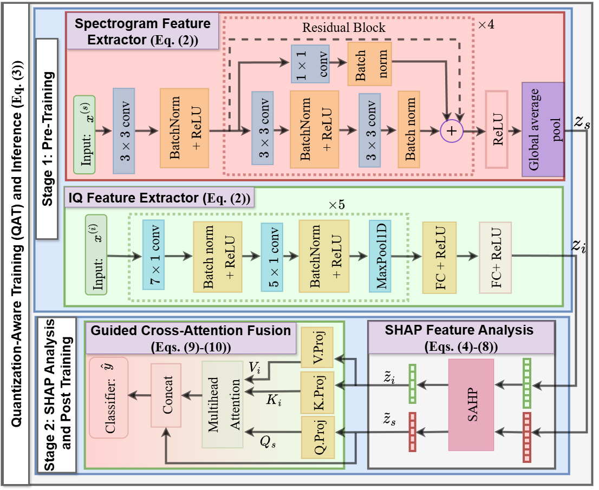
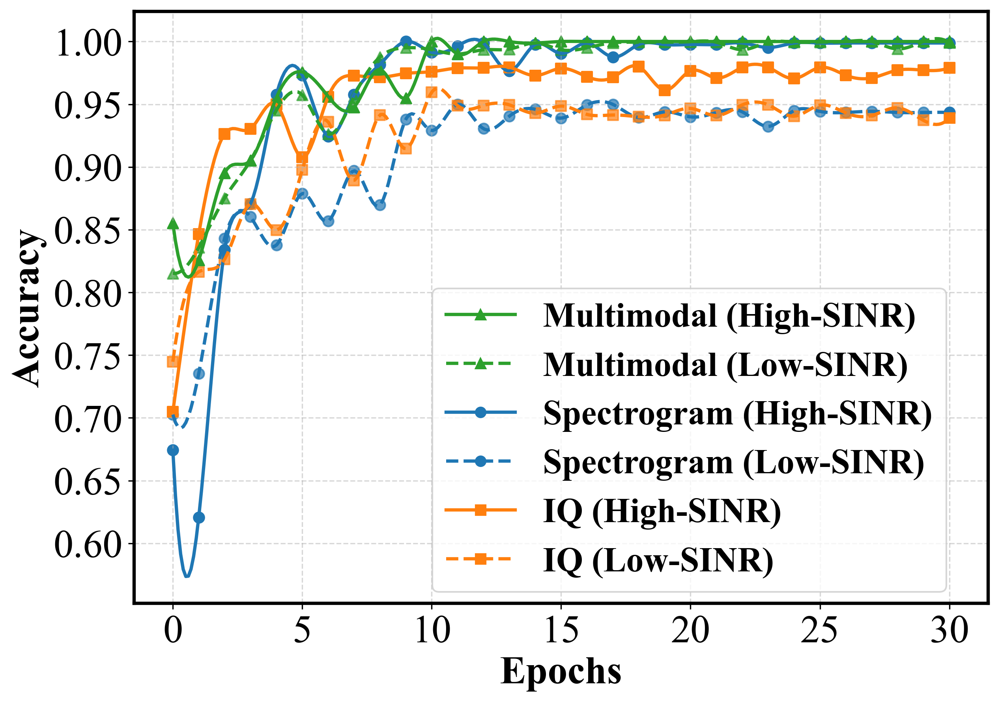
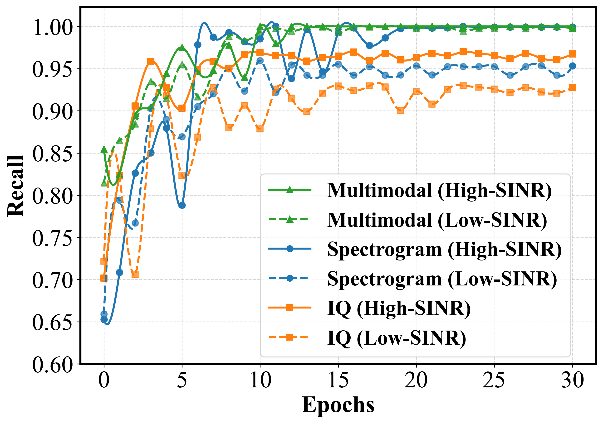
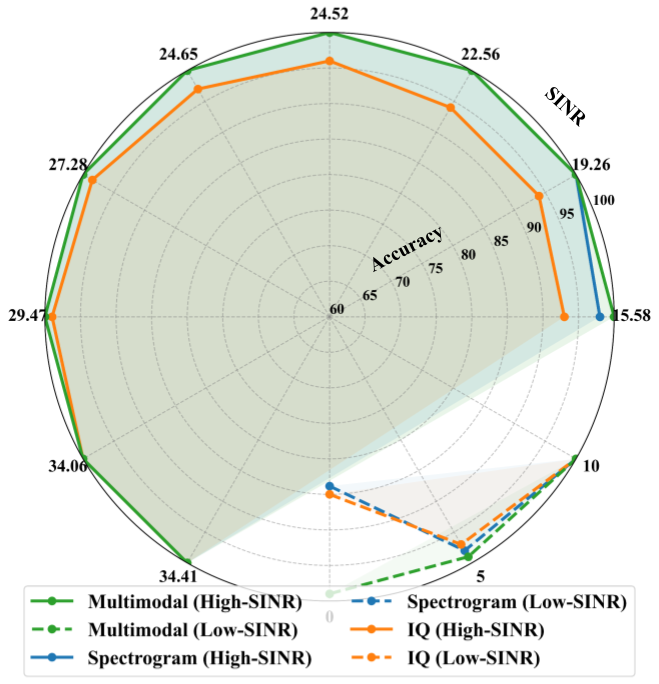
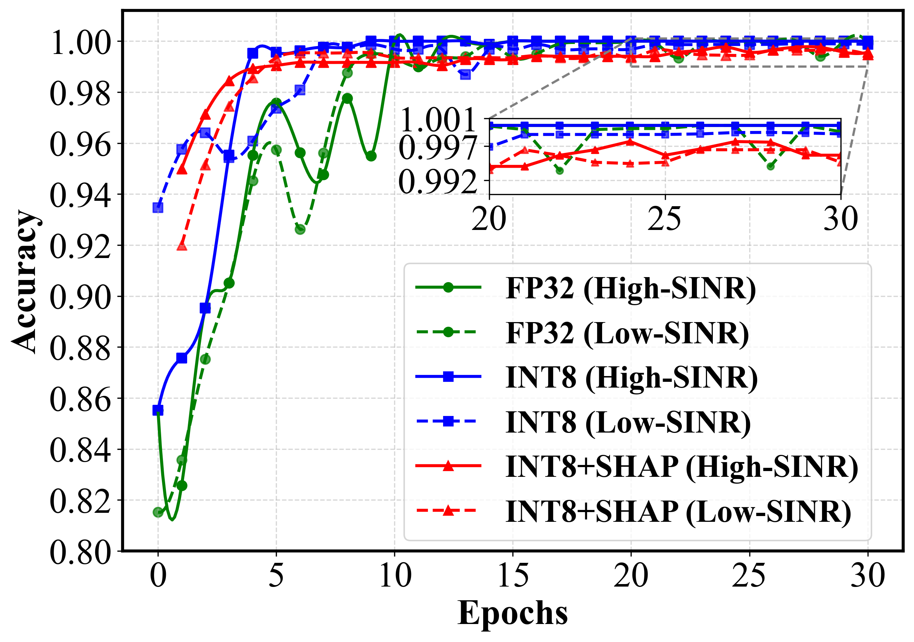
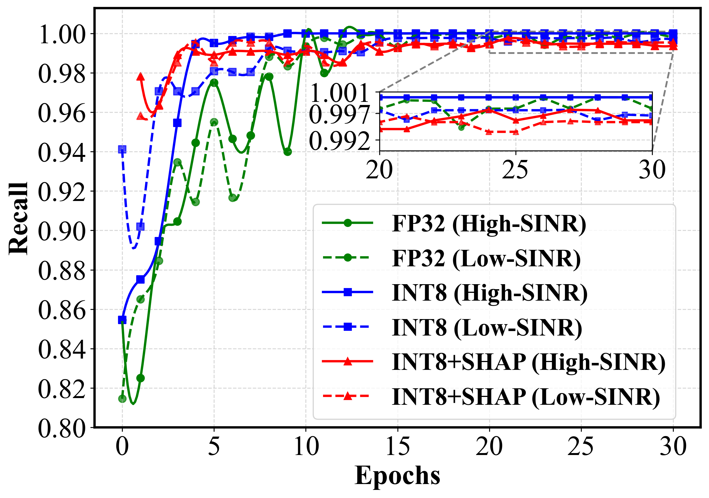

Detecting interference with incumbent radar signals in the shared Citizens Broadband Radio Service (CBRS) spectrum under low signal-to-interference-plus-noise ratio (SINR) conditions is critical for reliable spectrum sharing with a growing number of secondary users. The Federal Communications Commission (FCC) mandates that Environmental Sensing Capability (ESC) sensors detect naval radar signals with at least 99% accuracy within 60 seconds, typically at SINR of at least 20 dB.
This work addresses the more challenging scenario of SINR as low as 0 dB, corresponding to severe interference from dense secondary-user activity. We propose a multimodal machine learning framework that fuses in-phase/quadrature (IQ) samples and spectrogram representations captured at ESC sensors. To support lightweight deployment, the framework uses quantization-aware training and SHAP value-based feature pruning across modalities, reducing input dimensionality while preserving detection performance.
Experimental validation on low- and high-SINR CBRS datasets demonstrates consistent detection accuracy of at least 99%, with reduced computational complexity and inference latency of 70.811 ms on CPU and 1.812 ms on GPU.
The proposed framework proceeds in two stages. First, spectrogram and IQ encoders are pretrained independently as unimodal classifiers under FP32 and INT8 quantization-aware training. Second, SHAP attribution identifies the most informative penultimate-layer features from both encoders, and the selected features are fused through a guided cross-attention head.

Spectrogram and IQ encoders provide complementary time-frequency and temporal/phase cues. SHAP pruning removes redundant features before guided cross-attention fusion.
>=99%
Detection accuracy and recall across low- and high-SINR datasets
60.9%
Feature reduction from SHAP-guided pruning
1.812 ms
GPU inference latency for INT8+SHAP

Accuracy of unimodal and multimodal FP32 models across real-world and synthetic datasets.

Recall of unimodal and multimodal FP32 models across real-world and synthetic datasets.

SINR-wise accuracy under high- and low-SINR conditions.

Accuracy after INT8 quantization and SHAP feature pruning.

Recall after INT8 quantization and SHAP feature pruning.
@INPROCEEDINGS{baduwal2026multimodal,
author={Baduwal, Madan and Chaudhary, Vini},
booktitle={IEEE International Conference on Communications (ICC)},
title={Lightweight Multimodal Radar Interference Detection at Low SINRs in CBRS},
year={2026},
volume={},
number={},
pages={},
organization={IEEE}
}
}